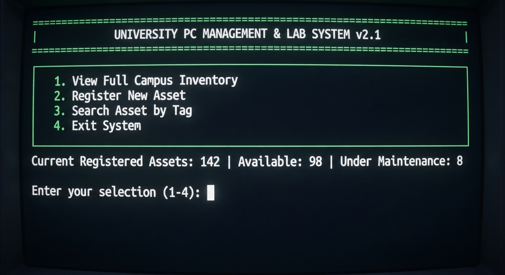
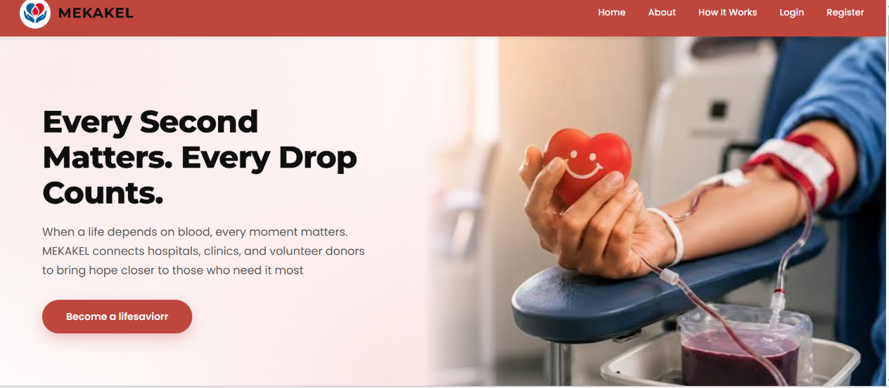

A team-based capstone project developed at Google Developer Groups (GDG). The website allows users to search for movies and explore movie-related information using a publicly available movie API. It provides a simple and user-friendly interface for discovering movies and accessing relevant details.
A frontend web development project. The website presents a restaurant's information through different sections, including a homepage, food menu, image gallery, and contact information, giving visitors an organized way to explore the restaurant's offerings and find contact details.
A tourism website that showcases Ethiopian travel destinations and tour services. It introduces visitors to different places of interest in Ethiopia and presents available tourism experiences, making tour services more accessible through a simple, visually organized web interface.
Technologies
HTML
CSS
Digital PC Management System

A team-based software development project that digitalizes the management and tracking of computer-related information and usage records. It provides a structured way to store, organize, and manage PC information, reducing manual record-keeping.
A team-based project that improves cafeteria operations through digital record management. It manages cafeteria information, organizes food-related records, and supports food ordering and service, with the goal of reducing manual work and making cafeteria services more efficient.
Technologies
C++
MySQL
MEKAKEL

An individual full-stack project: a blood coordination platform that connects hospitals, clinics, and volunteer blood donors. It helps healthcare institutions coordinate blood requests, check available blood inventory, and identify compatible volunteer donors when more blood is needed.
A mobile application that makes selected digital services more accessible through smartphones. It simplifies everyday tasks, reduces the need for manual processes, and creates a more convenient user experience.